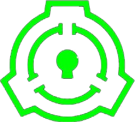
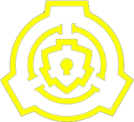
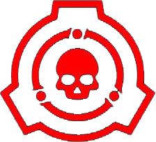
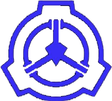

0
0
ACTIVITY LOG
No unread alerts.
LEVEL 2 / RESTRICTED DATA ACCESS REQUIRED
DATABASE FILE: OBJECT CLASSIFICATION SYSTEM
PRIMARY OBJECT CLASSES
Object Classes are used to classify anomalous objects, entities, and phenomena based on how difficult they are to contain. The Foundation uses a wide range of classes, but the primary classification system is commonly known as the 'Safe-Euclid-Keter' (SEK) rating.
SAFE

Safe class SCPs are anomalies that are either sufficiently understood that they can be reliably contained with minimal resources, or that pose no threat when contained. To be classified as Safe, an SCP must be fully contained and containable, meaning the likelihood of a containment breach is low. It is important to note that Safe does not mean the object poses no danger once containment is breached.
EUCLID

Euclid class SCPs are anomalies that are either insufficiently understood or inherently unpredictable, meaning reliable containment is not always possible. Euclid is considered the default class for any anomaly that is not immediately obvious as Safe or Keter. This category often includes objects that are sentient, sapient, or exhibit behaviors that cannot be fully predicted.
KETER

Keter class SCPs are anomalies that are extremely difficult to contain consistently or reliably, with containment procedures often being extensive and complex. These objects typically pose a major threat to Foundation personnel and the surrounding world. Keter classification is often applied to world-ending, self-aware, or highly dangerous anomalies.
THAUMIEL

Thaumiel class SCPs are anomalies that are used by the Foundation to contain other SCPs, or for other highly secretive purposes. The existence of Thaumiel class objects is top secret and known only to O5 Council members and select personnel. These objects are often contained in the most secure and remote Foundation facilities.
SECONDARY OBJECT CLASSES
The following object classes are less frequently used, and designate anomalies with unusual containment requirements.
APOLLYON
Apollyon-class SCPs are anomalies that cannot be contained, are expected to breach containment imminently, or some other similar scenario. Such anomalies are usually associated with world-ending threats or a K-Class Scenario of some kind, and require a massive effort from the Foundation to deal with.
ARCHON
Archon-class SCPs are anomalies that could theoretically be contained but are best left uncontained for some reason. Archon SCPs may be a part of consensus reality that is difficult to fully contain, or may have adverse effects if put into containment. The defining feature of the class is that the Foundation chooses to not put the anomaly into containment.
TICONDEROGA
Ticonderoga-class SCPs cannot be contained, but also do not need to be contained. While similar to Archon-class SCPs in that their containment is unnecessary, Ticonderoga-class SCPs are distinguished by also not being containable given the Foundation's current knowledge and resources. This may be due to their widespread or ubiquitous occurrence on Earth, or because they are extraterrestrial anomalies beyond the current reach of the Foundation.
NON-STANDARD OBJECT CLASSES
Most of the following Object Classes indicate that an SCP has not yet been assigned a standard object class, or that it was previously assigned a Standard Object Class but no longer requires containment. There are also additional Object Classes that are used less frequently than the ones listed above, known as Esoteric or Narrative object classes.
EXPLAINED
Explained SCPs are commonly articles about anomalies that are completely and fully understood, to the point where their effects are now explainable by mainstream science, or phenomena that have been debunked or falsely mistaken as an anomaly.
NEUTRALIZED
Neutralized SCPs are former anomalies that are no longer anomalous, either through having been intentionally or accidentally destroyed or disabled.
DECOMMISSIONED
Decommissioned SCPs are anomalies that have been intentionally destroyed or stripped of their anomalous properties by the SCP Foundation. This class is only used when it is not possible to fully contain an anomaly, or when excessive expenditure of resources is required. Decommissioning requires authorization from a higher authority, such as the O5 Council or the Ethics Committee.
PENDING
SCP articles that have not yet been assigned an object class may be labelled as Pending. This is used to indicate that the Foundation does not currently have enough information to assign an object class to the anomaly. This is a deliberate decision to emphasis that research is ongoing.
UNCONTAINED
SCPs that are not yet contained may be assigned an object class, often Keter, but the Uncontained designation is also used in place of an object class to emphasis that ongoing effort is required to establish or restore containment.
ESOTERIC
Additional Object classes not listed above are generally created to further the narrative in a particular SCP and only used once, and so are referred to as Esoteric or Narrative Object Classes. Esoteric object classes that are used often enough may eventually meet the requirements to be added to the list of Secondary Classes above.